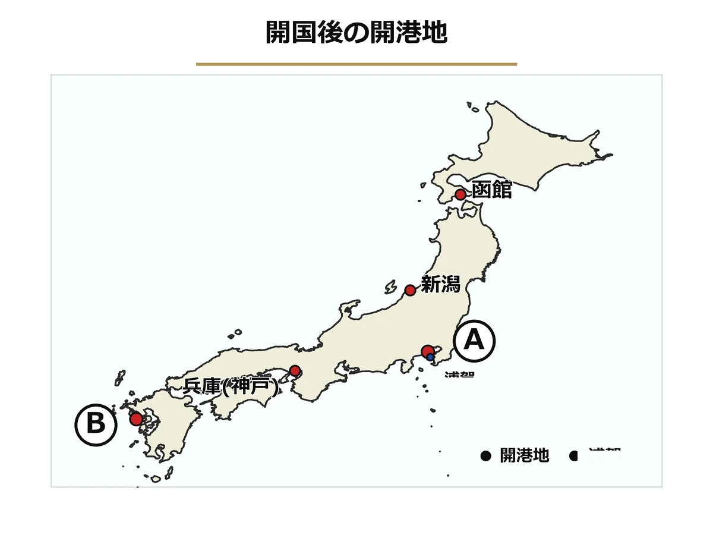

‹ 単元一覧にもどる
歴史 ⑩問題集
幕末の動乱
黒船来航 〜 江戸幕府の滅亡
 いっしょに
いっしょにがんばろう！
💡タブか下のリストから単元を選ぼう！
やり方（おすすめ順・穴埋め・一問一答・4択・記述）は単元を開いてから選べるよ。
📖 参考書を開く
やり方（おすすめ順・穴埋め・一問一答・4択・記述）は単元を開いてから選べるよ。
年
年表でチェック
（ ）をタップすると答えが出るよ。まずは自分で言ってから確かめよう！
| 年代 | できごと |
|---|---|
| 1853年 | が黒船で浦賀に来航し、開国を要求する |
| 1854年 | が結ばれ、下田・函館の2港が開かれる |
| 1858年 | 井伊直弼がを結び、領事裁判権を認める |
| 1858〜59年 | 井伊直弼が尊王攘夷派を弾圧するが起こる |
| 1860年 | 井伊直弼が暗殺されるが起こる |
| 1862年 | 薩摩藩士がイギリス人を殺傷するが起こる |
| 1863年 | 薩摩藩とイギリスが戦うが起こる |
| 1863年 | 高杉晋作が長州藩でを組織する |
| 1863〜64年 | 長州藩が四国艦隊と戦うが起こる |
| 1866年 | 坂本龍馬の仲立ちでが結ばれる |
| 1867年 | 徳川慶喜が政権を朝廷に返すが行われる |
| 1867年 | 天皇中心の新政府樹立を宣言するが出される |
| 1867年ごろ | 民衆による熱狂的な踊り「」が広がる |
| 1868年 | 戊辰戦争最初の戦いとなるが起こる |
| 1868年 | 勝海舟と西郷隆盛の交渉によりが無血開城される |
1
開国と不平等条約
▶やり方をえらぼう目次にもどれば何度でも変えられるよ
解答
採点
順番
順番
A要点まとめ（ ）をタップして確かめよう
📖 先に参考書で理解する
1853年、アメリカのが軍艦を率いて浦賀に来航し、幕府に開国を要求した。人々はその蒸気船をと呼んで驚いた。翌1854年、幕府はアメリカとを結び、下田と函館の2港を開いて約200年続いた鎖国を終わらせた。その後、アメリカ総領事が下田に駐在して通商を求め、1858年、大老は天皇の許可であるを得ないままを結んだ。この条約は、外国人の犯罪を外国の法で裁くを認め、輸入品の税率を自国で決めるを持たない不平等な内容であった。
B一問一答1 / 14
1853年に黒船で浦賀に来航し、開国を要求したアメリカの軍人は？
📖 解説を読む（ヒント）
ペリー
アメリカ東インド艦隊司令長官。1853年に黒船で浦賀に来航し、翌年の日米和親条約で日本の鎖国を終わらせた人物。
B一問一答2 / 14
ペリーが率いた蒸気船の呼び名は？
📖 解説を読む（ヒント）
黒船
1853年にペリーが率いて浦賀に来航したアメリカの蒸気船。黒い船体と蒸気の煙から「黒船」と呼ばれ、人々を驚かせた。
B一問一答3 / 14
1854年に日本とアメリカが結んだ、下田・函館を開く条約は？
📖 解説を読む（ヒント）
日米和親条約
1854年に日本がアメリカと結んだ条約。下田と函館の2港を開き、約200年続いた鎖国を終わらせた。
B一問一答4 / 14
1858年に井伊直弼が結んだ、不平等な通商条約は？
📖 解説を読む（ヒント）
日米修好通商条約
1858年に大老井伊直弼がアメリカと結んだ通商条約。領事裁判権を認め、関税自主権がない不平等条約だった。
B一問一答5 / 14
日米修好通商条約を朝廷の許可なく結んだ大老は？
📖 解説を読む（ヒント）
井伊直弼
1858年に勅許なく日米修好通商条約を結んだ大老。安政の大獄で反対派を弾圧したが、1860年桜田門外の変で暗殺された。
B一問一答6 / 14
外国人が日本で罪を犯しても日本の法律で裁けない権利は？
📖 解説を読む（ヒント）
領事裁判権
外国人が日本で罪を犯しても日本の法では裁けず、外国側の領事が外国の法で裁く権利。不平等条約の代表的な中身。
B一問一答7 / 14
輸入品にかける税率を自国で決める権利は？
📖 解説を読む（ヒント）
関税自主権
輸入品にかける税率を自国で自由に決める権利。日米修好通商条約で日本はこの権利がなく、国内産業を保護できなかった。
B一問一答8 / 14
アメリカ・オランダ・ロシア・イギリス・フランスと結んだ不平等条約の総称は？
📖 解説を読む（ヒント）
安政の五か国条約
1858年、井伊直弼のもとでアメリカ・オランダ・ロシア・イギリス・フランスの5か国と結ばれた不平等条約の総称。
B一問一答12 / 14
1853年にペリーが来航した場所は？
📖 解説を読む（ヒント）
浦賀
神奈川県にある江戸湾の入口の港。1853年にペリーが黒船を率いて来航し、幕府に開国を要求した場所として有名。
B一問一答13 / 14
日米修好通商条約の交渉にあたったアメリカ総領事は？
📖 解説を読む（ヒント）
ハリス
アメリカの初代総領事。1856年から下田に駐在し、幕府と1858年の日米修好通商条約の交渉を行った人物。
B一問一答14 / 14
天皇の許可のことを何という？
📖 解説を読む（ヒント）
勅許
天皇の許可のこと。1858年に大老井伊直弼は勅許なしで通商条約を結び、天皇を尊び外国を退けるべきと主張する人々から強く批判された。
B一問一答全14問・まとめて採点
まず全部の問題にこたえてから、下のボタンでまとめて答え合わせしよう！
(1)1853年に黒船で浦賀に来航し、開国を要求したアメリカの軍人は？
ペリー
アメリカ東インド艦隊司令長官。1853年に黒船で浦賀に来航し、翌年の日米和親条約で日本の鎖国を終わらせた人物。
(2)ペリーが率いた蒸気船の呼び名は？
黒船
1853年にペリーが率いて浦賀に来航したアメリカの蒸気船。黒い船体と蒸気の煙から「黒船」と呼ばれ、人々を驚かせた。
(3)1854年に日本とアメリカが結んだ、下田・函館を開く条約は？
日米和親条約
1854年に日本がアメリカと結んだ条約。下田と函館の2港を開き、約200年続いた鎖国を終わらせた。
(4)1858年に井伊直弼が結んだ、不平等な通商条約は？
日米修好通商条約
1858年に大老井伊直弼がアメリカと結んだ通商条約。領事裁判権を認め、関税自主権がない不平等条約だった。
(5)日米修好通商条約を朝廷の許可なく結んだ大老は？
井伊直弼
1858年に勅許なく日米修好通商条約を結んだ大老。安政の大獄で反対派を弾圧したが、1860年桜田門外の変で暗殺された。
(6)外国人が日本で罪を犯しても日本の法律で裁けない権利は？
領事裁判権
外国人が日本で罪を犯しても日本の法では裁けず、外国側の領事が外国の法で裁く権利。不平等条約の代表的な中身。
(7)輸入品にかける税率を自国で決める権利は？
関税自主権
輸入品にかける税率を自国で自由に決める権利。日米修好通商条約で日本はこの権利がなく、国内産業を保護できなかった。
(8)アメリカ・オランダ・ロシア・イギリス・フランスと結んだ不平等条約の総称は？
安政の五か国条約
1858年、井伊直弼のもとでアメリカ・オランダ・ロシア・イギリス・フランスの5か国と結ばれた不平等条約の総称。
(9)日米和親条約で開かれた静岡県の港は？
下田
1854年の日米和親条約で函館とともに最初に開かれた静岡県の港で、後にアメリカ総領事ハリスが駐在した。
(10)日米和親条約で開かれた北海道の港は？
函館
1854年の日米和親条約で下田とともに開港された北海道の港。当時は箱館と書いた。鎖国終了の象徴の一つ。
(11)日米修好通商条約後に最大の貿易港となった港は？
横浜
1858年の日米修好通商条約で開港し、生糸などの輸出を通じて外国との貿易の中心地となった港。
(12)1853年にペリーが来航した場所は？
浦賀
神奈川県にある江戸湾の入口の港。1853年にペリーが黒船を率いて来航し、幕府に開国を要求した場所として有名。
(13)日米修好通商条約の交渉にあたったアメリカ総領事は？
ハリス
アメリカの初代総領事。1856年から下田に駐在し、幕府と1858年の日米修好通商条約の交渉を行った人物。
(14)天皇の許可のことを何という？
勅許
天皇の許可のこと。1858年に大老井伊直弼は勅許なしで通商条約を結び、天皇を尊び外国を退けるべきと主張する人々から強く批判された。
E資料問題写真を見て答えよう

(1)地図中のA・Bは、日米修好通商条約(1858年)で開かれた港である。Aの、現在の横浜にあたる港を何というか。
(2)地図中Bの、九州にある港を何というか。
(3)地図中に示された、1853年にペリーが初めて来航した場所を何というか。

2
開国後の政治と経済
▶やり方をえらぼう目次にもどれば何度でも変えられるよ
解答
採点
順番
順番
A要点まとめ（ ）をタップして確かめよう
📖 先に参考書で理解する
開国に反対する人々の間には、天皇を尊び外国勢力を排除しようとするの考えが広がった。これに対し大老井伊直弼は、1858〜59年に反対派を処罰するを行い、で高杉晋作らを育てた思想家らを処刑した。この弾圧への反発から、1860年、井伊直弼は水戸藩の浪士らに暗殺されるで命を落とした。幕府は権威回復のため朝廷と協力するを図ったが、うまくいかなかった。一方、開港後の貿易ではや茶が横浜港からなどへ大量に輸出され、国内で品不足が起こって物価が上昇した。また、日本と海外の金銀の交換比率の違いからも起こり、人々の生活は苦しくなった。
B一問一答1 / 14
天皇を尊び、外国を追い払おうとする運動は？
📖 解説を読む（ヒント）
尊王攘夷
天皇を尊び、外国を追い払おうとする幕末の運動。開国に反対する長州・水戸藩の志士らが掲げ、倒幕へとつながった。
B一問一答2 / 14
井伊直弼が尊王攘夷派を厳しく処罰した事件は？
📖 解説を読む（ヒント）
安政の大獄
1858〜59年、大老井伊直弼が条約調印や将軍継嗣問題で対立した尊王攘夷派を処罰した事件。吉田松陰らが処刑された。
B一問一答3 / 14
1860年、井伊直弼が暗殺された事件は？
📖 解説を読む（ヒント）
桜田門外の変
1860年、安政の大獄への反発から水戸藩の浪士らが江戸城桜田門外で大老井伊直弼を襲撃し、暗殺した事件。
B一問一答5 / 14
幕府と朝廷が協力しようとする政策は？
📖 解説を読む（ヒント）
公武合体
朝廷（公）と幕府（武）が手を組み政治の安定を図ろうとした政策。幕府は権威の回復を狙ったが結局うまくいかなかった。
B一問一答7 / 14
日本と外国の金銀交換比率の違いで起きた問題は？
📖 解説を読む（ヒント）
金の流出
日本では金1=銀5、海外では金1=銀15だったため、外国商人は銀を持ち込んで日本の金を安く買い、大量の金が海外に流出した。
B一問一答9 / 14
天皇を尊ぶという考え方を何という？
📖 解説を読む（ヒント）
尊王
天皇を尊ぶという幕末の思想。攘夷と合わせて「尊王攘夷」というスローガンになり、倒幕運動を支える理念となった。
B一問一答10 / 14
外国の勢力を排除しようとする考えは？
📖 解説を読む（ヒント）
攘夷
外国の勢力を武力で追い払おうとする幕末の考え方。「夷」とは当時、外国人を見下して呼んだ言葉。尊王思想と結びついた。
B一問一答11 / 14
生糸とともに開港後の日本の主要な輸出品となった農産物は？
📖 解説を読む（ヒント）
茶
生糸とともに開港後の日本の主要な輸出品となった農産物で、主にアメリカへ横浜港から大量に輸出された。
B一問一答全14問・まとめて採点
まず全部の問題にこたえてから、下のボタンでまとめて答え合わせしよう！
(1)天皇を尊び、外国を追い払おうとする運動は？
尊王攘夷
天皇を尊び、外国を追い払おうとする幕末の運動。開国に反対する長州・水戸藩の志士らが掲げ、倒幕へとつながった。
(2)井伊直弼が尊王攘夷派を厳しく処罰した事件は？
安政の大獄
1858〜59年、大老井伊直弼が条約調印や将軍継嗣問題で対立した尊王攘夷派を処罰した事件。吉田松陰らが処刑された。
(3)1860年、井伊直弼が暗殺された事件は？
桜田門外の変
1860年、安政の大獄への反発から水戸藩の浪士らが江戸城桜田門外で大老井伊直弼を襲撃し、暗殺した事件。
(4)安政の大獄で処刑された長州藩の思想家は？
吉田松陰
長州藩の思想家。松下村塾で高杉晋作や伊藤博文らを育てたが、1859年の安政の大獄で処刑された。
(5)幕府と朝廷が協力しようとする政策は？
公武合体
朝廷（公）と幕府（武）が手を組み政治の安定を図ろうとした政策。幕府は権威の回復を狙ったが結局うまくいかなかった。
(6)開港後の日本の主要な輸出品は？
生糸
開港後の日本の最大の輸出品で、横浜港からイギリスなどへ大量に輸出された。国内では品不足から価格が高騰した。
(7)日本と外国の金銀交換比率の違いで起きた問題は？
金の流出
日本では金1=銀5、海外では金1=銀15だったため、外国商人は銀を持ち込んで日本の金を安く買い、大量の金が海外に流出した。
(8)開港後に最大の貿易港となった場所は？
横浜
1858年の日米修好通商条約で開かれた5港の一つで、生糸の輸出を通じて開港後最大の貿易港となった。
(9)天皇を尊ぶという考え方を何という？
尊王
天皇を尊ぶという幕末の思想。攘夷と合わせて「尊王攘夷」というスローガンになり、倒幕運動を支える理念となった。
(10)外国の勢力を排除しようとする考えは？
攘夷
外国の勢力を武力で追い払おうとする幕末の考え方。「夷」とは当時、外国人を見下して呼んだ言葉。尊王思想と結びついた。
(11)生糸とともに開港後の日本の主要な輸出品となった農産物は？
茶
生糸とともに開港後の日本の主要な輸出品となった農産物で、主にアメリカへ横浜港から大量に輸出された。
(12)開港後、日本の最大の貿易相手国は？
イギリス
1858年の日米修好通商条約後、横浜港を通じて生糸などを大量に輸入した、当時の日本最大の貿易相手国。
(13)吉田松陰が開いた私塾は？
松下村塾
長州藩の思想家・吉田松陰が萩で開いた私塾で、高杉晋作・伊藤博文・木戸孝允ら明治維新の志士を多数輩出した。
(14)桜田門外の変が起きた年は？
1860年
桜田門外の変が起きた年。水戸藩の浪士らが江戸城桜田門外で大老井伊直弼を襲撃し、暗殺した。
3
江戸幕府の滅亡
▶やり方をえらぼう目次にもどれば何度でも変えられるよ
解答
採点
順番
順番
A要点まとめ（ ）をタップして確かめよう
📖 先に参考書で理解する
1863年、薩摩藩は生麦事件をきっかけにでイギリスと戦い、長州藩も外国艦隊とを戦って、ともに欧米との軍事力の差を痛感し、攘夷から倒幕へと方針を転換した。長州藩では高杉晋作が身分にとらわれないを組織して倒幕の戦力とした。1866年、土佐藩出身のの仲立ちにより、薩摩藩と長州藩の間でが結ばれ、倒幕の中心勢力が固まった。1867年、15代将軍は政権を朝廷に返すを行ったが、その後天皇中心の新政府樹立を宣言するが出された。翌1868年、鳥羽・伏見の戦いからが始まり、らの新政府軍が旧幕府軍を破って明治政府が確立した。
B一問一答1 / 14
1866年、薩摩藩と長州藩が結んだ同盟は？
📖 解説を読む（ヒント）
薩長同盟
1866年、土佐藩の坂本龍馬らの仲立ちで薩摩藩と長州藩が結んだ軍事同盟。倒幕の中心勢力となった。
B一問一答3 / 14
1867年、徳川慶喜が政権を朝廷に返したことは？
📖 解説を読む（ヒント）
大政奉還
1867年、15代将軍徳川慶喜が政権を朝廷に返した出来事。約260年続いた江戸幕府の政権が終わった。
B一問一答5 / 14
天皇中心の新政府を作ることを宣言した命令は？
📖 解説を読む（ヒント）
王政復古の大号令
1867年、大政奉還の後に出された命令。天皇を中心とする新政府の樹立を宣言し、幕府や摂政・関白の廃止を決めた。
B一問一答6 / 14
旧幕府軍と新政府軍が戦った内戦は？
📖 解説を読む（ヒント）
戊辰戦争
1868年の鳥羽・伏見の戦いから始まり、約1年半続いた旧幕府軍と新政府軍の内戦。新政府軍が勝利し明治政府が確立した。
B一問一答7 / 14
倒幕運動の中心となり、戊辰戦争で新政府軍を指揮した薩摩藩出身の人物は？
📖 解説を読む（ヒント）
西郷隆盛
薩摩藩出身の幕末・明治の指導者。倒幕運動を主導し、戊辰戦争では新政府軍を指揮した。後の西南戦争で敗死。
B一問一答8 / 14
初代内務卿として明治政府の中心となった薩摩藩出身の人物は？
📖 解説を読む（ヒント）
大久保利通
薩摩藩出身。西郷隆盛とともに倒幕運動を進め、明治政府の初代内務卿として殖産興業を推進した中心人物。
B一問一答10 / 14
桂小五郎の名でも知られ、薩長同盟の交渉を担った長州藩出身の人物は？
📖 解説を読む（ヒント）
木戸孝允
長州藩出身。桂小五郎の名でも知られ、薩長同盟の長州側の交渉を担い、明治政府で版籍奉還などを推進した。
B一問一答11 / 14
1863〜64年に長州藩が外国艦隊と戦った戦争は？
📖 解説を読む（ヒント）
下関戦争
1863〜64年、長州藩が関門海峡で英・仏・米・蘭の四国艦隊と戦った戦争。四国艦隊下関砲撃事件とも呼ばれる。
B一問一答12 / 14
高杉晋作が身分に関係なく有志を集めて組織した軍隊は？
📖 解説を読む（ヒント）
奇兵隊
1863年に高杉晋作が長州藩で組織した、武士以外の農民や町人も加わった新しい形の軍隊で、倒幕の戦力となった。
B一問一答全14問・まとめて採点
まず全部の問題にこたえてから、下のボタンでまとめて答え合わせしよう！
(1)1866年、薩摩藩と長州藩が結んだ同盟は？
薩長同盟
1866年、土佐藩の坂本龍馬らの仲立ちで薩摩藩と長州藩が結んだ軍事同盟。倒幕の中心勢力となった。
(2)薩長同盟を仲介した土佐藩出身の志士は？
坂本龍馬
土佐藩出身の幕末の志士。1866年に薩長同盟を仲介し、海援隊を結成して日本の近代化に尽力した。
(3)1867年、徳川慶喜が政権を朝廷に返したことは？
大政奉還
1867年、15代将軍徳川慶喜が政権を朝廷に返した出来事。約260年続いた江戸幕府の政権が終わった。
(4)大政奉還を行った江戸幕府最後の将軍は？
徳川慶喜
江戸幕府15代将軍。1867年に大政奉還を行い、政権を朝廷に返して幕府の終わりを迎えた人物。
(5)天皇中心の新政府を作ることを宣言した命令は？
王政復古の大号令
1867年、大政奉還の後に出された命令。天皇を中心とする新政府の樹立を宣言し、幕府や摂政・関白の廃止を決めた。
(6)旧幕府軍と新政府軍が戦った内戦は？
戊辰戦争
1868年の鳥羽・伏見の戦いから始まり、約1年半続いた旧幕府軍と新政府軍の内戦。新政府軍が勝利し明治政府が確立した。
(7)倒幕運動の中心となり、戊辰戦争で新政府軍を指揮した薩摩藩出身の人物は？
西郷隆盛
薩摩藩出身の幕末・明治の指導者。倒幕運動を主導し、戊辰戦争では新政府軍を指揮した。後の西南戦争で敗死。
(8)初代内務卿として明治政府の中心となった薩摩藩出身の人物は？
大久保利通
薩摩藩出身。西郷隆盛とともに倒幕運動を進め、明治政府の初代内務卿として殖産興業を推進した中心人物。
(9)長州藩で奇兵隊を組織した志士は？
高杉晋作
長州藩の幕末の志士。1863年、身分に関係なく有志を集めた奇兵隊を組織し、倒幕の戦いに活躍した。
(10)桂小五郎の名でも知られ、薩長同盟の交渉を担った長州藩出身の人物は？
木戸孝允
長州藩出身。桂小五郎の名でも知られ、薩長同盟の長州側の交渉を担い、明治政府で版籍奉還などを推進した。
(11)1863〜64年に長州藩が外国艦隊と戦った戦争は？
下関戦争
1863〜64年、長州藩が関門海峡で英・仏・米・蘭の四国艦隊と戦った戦争。四国艦隊下関砲撃事件とも呼ばれる。
(12)高杉晋作が身分に関係なく有志を集めて組織した軍隊は？
奇兵隊
1863年に高杉晋作が長州藩で組織した、武士以外の農民や町人も加わった新しい形の軍隊で、倒幕の戦力となった。
(13)薩長同盟が成立した年は？
1866年
薩長同盟が成立した年。坂本龍馬の仲立ちで薩摩藩と長州藩が結ばれ、倒幕運動の中心勢力となった。
(14)大政奉還が行われた年は？
1867年
大政奉還が行われた年。15代将軍徳川慶喜が政権を朝廷に返し、約260年続いた江戸幕府の政権が終わった。
解答
年表でチェック
ペリー 日米和親条約 日米修好通商条約 安政の大獄 桜田門外の変 生麦事件 薩英戦争 奇兵隊 下関戦争 薩長同盟 大政奉還 王政復古の大号令 ええじゃないか 鳥羽・伏見の戦い 江戸城
1 開国と不平等条約
A 要点まとめ① ペリー ② 黒船 ③ 日米和親条約 ④ ハリス ⑤ 井伊直弼 ⑥ 勅許 ⑦ 日米修好通商条約 ⑧ 領事裁判権 ⑨ 関税自主権
B 一問一答(1) ペリー (2) 黒船 (3) 日米和親条約 (4) 日米修好通商条約 (5) 井伊直弼 (6) 領事裁判権 (7) 関税自主権 (8) 安政の五か国条約 (9) 下田 (10) 函館 (11) 横浜 (12) 浦賀 (13) ハリス (14) 勅許
C 実戦問題(1) ア（井伊直弼） (2) ア（関税自主権） (3) ウ（安政の五か国条約） (4) イ（ハリス） (5) エ（関税を自由に決められなかった） (6) エ（阿部正弘） (7) ア（5港） (8) ウ（安政の大獄）
D 記述問題
(1) 太平洋で活動する捕鯨船や中国との貿易船に、燃料・食料・水を補給する港として日本を利用すること。
(2) 和親条約は下田・函館の2港を開いただけだったが、修好通商条約はさらに開港を広げたうえ、領事裁判権を認め関税自主権を持たない不平等な条約だった。
(3) 朝廷（天皇）の許可である勅許を得ないまま条約を結んだため、尊王攘夷派の反発を招いた。
E 資料問題(1) 神奈川（横浜） (2) 長崎 (3) 浦賀
2 開国後の政治と経済
A 要点まとめ① 尊王攘夷 ② 安政の大獄 ③ 松下村塾 ④ 吉田松陰 ⑤ 桜田門外の変 ⑥ 公武合体 ⑦ 生糸 ⑧ イギリス ⑨ 金の流出
B 一問一答(1) 尊王攘夷 (2) 安政の大獄 (3) 桜田門外の変 (4) 吉田松陰 (5) 公武合体 (6) 生糸 (7) 金の流出 (8) 横浜 (9) 尊王 (10) 攘夷 (11) 茶 (12) イギリス (13) 松下村塾 (14) 1860年
C 実戦問題(1) イ（吉田松陰） (2) イ（横浜） (3) イ（金の流出） (4) ウ（水戸藩） (5) エ（イギリス） (6) ウ（公武合体） (7) ア（輸出増で品不足になった） (8) エ（金銀比率が海外と違ったため）
D 記述問題
(1) 安政の大獄で尊王攘夷派を厳しく弾圧したことへの反発から、水戸藩の浪士らに江戸城桜田門外で襲撃され暗殺されたから。
(2) 日本と海外で金と銀の交換比率が大きく違ったため、外国商人が銀を持ち込んで日本の金を安く買い、大量に国外へ持ち出したから。
3 江戸幕府の滅亡
A 要点まとめ① 薩英戦争 ② 下関戦争 ③ 奇兵隊 ④ 坂本龍馬 ⑤ 薩長同盟 ⑥ 徳川慶喜 ⑦ 大政奉還 ⑧ 王政復古の大号令 ⑨ 戊辰戦争 ⑩ 西郷隆盛
B 一問一答(1) 薩長同盟 (2) 坂本龍馬 (3) 大政奉還 (4) 徳川慶喜 (5) 王政復古の大号令 (6) 戊辰戦争 (7) 西郷隆盛 (8) 大久保利通 (9) 高杉晋作 (10) 木戸孝允 (11) 下関戦争 (12) 奇兵隊 (13) 1866年 (14) 1867年
C 実戦問題(1) ウ（王政復古の大号令） (2) ウ（戊辰戦争） (3) ア（ええじゃないか） (4) エ（大久保利通） (5) イ（鳥羽・伏見） (6) ア（生麦事件） (7) ウ（木戸孝允） (8) エ（1868年）
D 記述問題
(1) 薩英戦争や下関戦争で欧米との軍事力の差を痛感し、攘夷をやめて倒幕による近代化を目指すようになったから。
(2) 大政奉還は徳川慶喜が政権を朝廷に返したことで、王政復古の大号令はその後天皇中心の新政府の樹立を宣言したことである。
(3) 土佐藩出身の坂本龍馬の仲立ちで、対立していた薩摩藩と長州藩が同盟を結び、倒幕の中心勢力が固まった。